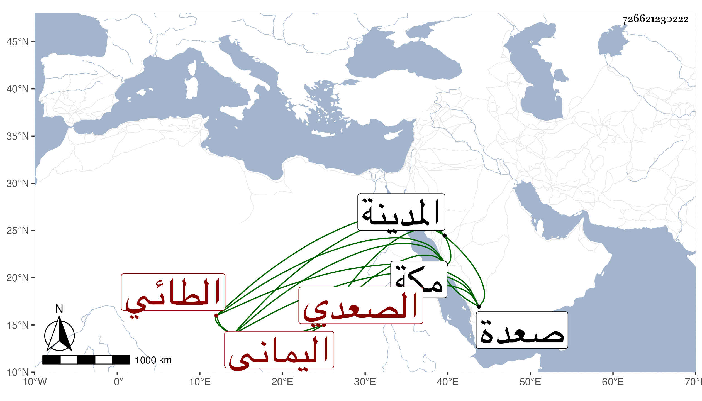

0902Sakhawi.DawLamic.ITO20230111-ara1.EIS1600.726621230222
Biography ID: 726621230222
أحمد بن حسن بن أحمد الطائي الصعدي اليماني . لقيته بمكة في رمضان سنة سبع وتسعين فسمع مني المسلسل بشرطه وعلى ختم السيرة الهشامية ومؤلفي في ختمها وقصيدة البوصيري الهمزية وكتبت له إجازة وقال لي أنه ولد في آخر سنة خمس وخمسين أو أول التي تليها بصعدة واشتغل قليلا وسمع على بعض الآخذين عن يحيى العامري وقرأ في هذه السنة بالمدينة النبوية حين كان فيها للزيارة على قاضيها خير الدين بن القصبي المالكي في الموطأ ورجع إلى بلاده .
